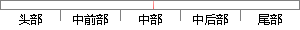

在 节中介绍了梯度下降，即沿着整个训练集的梯度方向下降。
片段位置图

相似结果|
相似片段 1：梯度下降法．从理论上看其训练是沿着误差曲面的切面向下逼近的。对一个复杂的网络来说，其误差曲面是一个高维空间中的曲面．是非常复杂不规则的，其中分布着许多局部极小点。在网络的训练过程中，很容易陷入了这样
相似片段 2：梯度的方向调整权值，每一次循环进行时，都会沿着结合梯度的方向进行搜索以找到权值调整的最佳数值，这个数值要使误差平均方差沿着结合梯度方向下降最快。这种方法的收敛速度一般比沿着最陡梯度方向调整权值的方法
相似片段 3：，期望误差的设定等，都会影响收敛速度。(2)易陷入局部极小点BP算法是基于误差函数梯度下降法的非线性优化方法，其训练是沿着误差曲面的斜面向下逼近。在实际问题的求解中，误差曲面往往是高维空间中的复杂曲面
相似片段 4：“pschitz的近似值。结果表明，这些方法都在一定程度上改善了收敛速度慢的问题。2局部极小问题的几种改进方案BP网络的权值修正方法即误差函数梯度下降法，从理论上看其训练是沿着误差曲面的切面向下逼近
|
※ 片段修改建议 ※
近似词参考：- 介绍：先容
- 下降：降落 下落 降低
- 整个：全部
- 训练：练习
- 下降：降落 下落 降低
系统自动生成语句：在 节中先容了梯度降落，即沿着全部练习集的梯度方向降落。
注：本片段修改建议为系统自动生成，仅供参考。